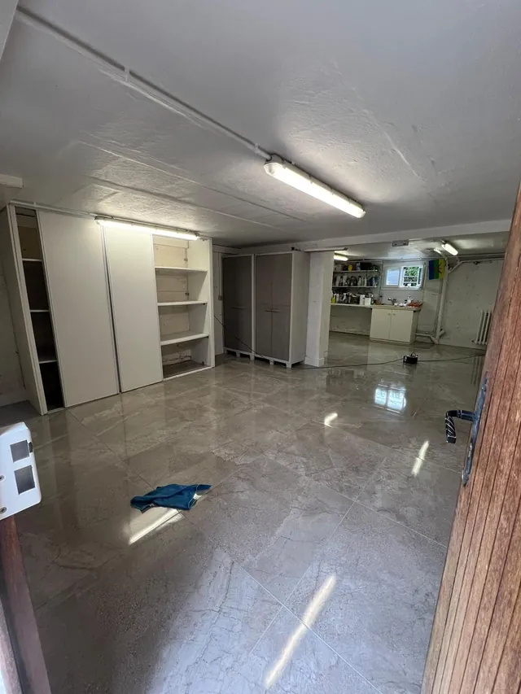

Béton ciré ou carrelage :
comment choisir ?
Le carrelage coûte moins cher au m². Le béton ciré se pose sans joints et, le plus souvent, sans dépose. Ce que cela change selon votre projet.



Le carrelage coûte moins cher au m². Le béton ciré se pose sans joints et, le plus souvent, sans dépose. Ce que cela change selon votre projet.

Soyons directs : si le seul critère est le prix au m², le carrelage gagne. Dans notre grille, il se chiffre de 45 à 95 € HT le m², contre 120 à 250 € HT pour le béton ciré.
Mais le prix au m² ne dit pas tout. Si le carrelage en place doit être déposé, la dépose et la remise à niveau s'ajoutent. Le béton ciré, lui, se pose en quelques millimètres sur un support sain, ce qui évite souvent ce poste. Et il n'a pas de joints, ce qui change l'entretien comme l'aspect.
| Critère | Carrelage | Béton ciré |
|---|---|---|
| Prix au m² (notre grille) | 45 à 95 € HT | 120 à 250 € HT |
| Joints | Oui, à entretenir | Aucun |
| Dépose de l'ancien revêtement | Souvent nécessaire | Rarement, si le support est sain |
| Épaisseur | Plusieurs millimètres de colle et de carreau | Quelques millimètres |
| Pièces d'eau | Standard | Possible, avec étanchéité sous le revêtement |
| Aspect | Dessin et format du carreau | Surface continue, teinte sur mesure |
Budget serré, grande surface standard, sol très sollicité, envie d'un format ou d'un motif précis. C'est un revêtement éprouvé, avec un choix immense, et il ne demande pas de finition de protection à renouveler.
Vous voulez une surface continue, sans joints, du sol au mur. Vous rénovez et préférez ne pas déposer l'existant. Vous avez une petite pièce où les joints découpent trop le regard. Ou vous cherchez une teinte composée sur mesure.
Les deux fonctionnent. Dans une douche, le béton ciré supprime les joints, mais l'étanchéité doit être traitée sous le revêtement dans les deux cas. Ne choisissez pas un revêtement sans avoir vu comment l'étanchéité est prévue au devis.
Carrelage : un lavage courant, et un œil sur les joints. Béton ciré : une finition de protection à entretenir avec des produits adaptés, pas n'importe quel nettoyant. Demandez la fiche d'entretien avant de décider.
Carrelage au sol, béton ciré sur un mur de douche ou une crédence : une façon de garder le rendu continu là où il se voit, sans payer le tarif du béton ciré sur toute la surface.
Les deux se jugent mal sur une photo. Voyez un échantillon à la lumière de votre pièce avant de signer.
Calculés à partir des fourchettes de notre grille. Sans dépose ni reprise du support, qui s'ajoutent selon l'état de l'existant.
| Surface | Carrelage HT | Béton ciré HT |
|---|---|---|
| 10 m² | 450 € – 950 € | 1 200 € – 2 500 € |
| 20 m² | 900 € – 1 900 € | 2 400 € – 5 000 € |
| 40 m² | 1 800 € – 3 800 € | 4 800 € – 10 000 € |
Fourchettes hors taxes, non contractuelles, issues de notre grille tarifaire. Ce que comprend chaque prix (fourniture, pose, préparation) est précisé au devis.
Qu'y a-t-il aujourd'hui au sol ? Si le revêtement est sain, le béton ciré peut se poser dessus et vous évitez une dépose. S'il est en mauvais état, la question ne se pose pas de la même façon.
Quelle surface ? Sur 40 m², l'écart de prix devient significatif. Sur une salle de bain de 5 m², il se joue sur quelques centaines d'euros.
Qu'est-ce qui vous gênerait le plus au quotidien ? Des joints à entretenir, ou une finition à protéger ? La réponse oriente le choix mieux que n'importe quel comparatif.
Envoyez-nous des photos de votre pièce sur WhatsApp, nous vous dirons honnêtement lequel des deux colle à votre projet. Pour un ordre de grandeur, utilisez l'estimateur de budget. Voir aussi les pages béton ciré et carrelage.
À lire aussi : Prix du béton ciré au m² · Béton ciré premium · Carrelage et faïence.
Ce qu'on nous demande le plus avant un devis.
Devis gratuit, réponse sous 24h. France & Belgique.